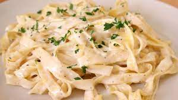

Alfredo´s Pasta

Description
Alfredo's pasta is a culinary delight that embodies the essence of indulgence and simplicity. Named after its creator, Alfredo di Lelio, this Italian-American dish showcases the art of harmonizing a few exquisite ingredients into a harmonious symphony of flavor. Alfredo's pasta, with its elegant simplicity, speaks to the soul of comfort and sophistication, a timeless reminder of the beauty that can emerge from the simplest of ingredients.
Ingredients
- 8 ounces (about 225g) fettuccine pasta
- 1/2 cup (115g) unsalted butter
- 1 cup (240ml) heavy cream
- 1 cup (100g) grated Parmesan cheese
- Salt and freshly ground black pepper, to taste
- Optional: Fresh parsley, chopped, for garnish
Steps
- Cook the Pasta:
- Bring a large pot of salted water to a boil.
- Add the fettuccine pasta and cook until al dente according to package instructions.
- Drain the pasta and set aside.
- Prepare the sauce
- In a large skillet, melt the butter over medium heat.
- Once the butter is melted, pour in the heavy cream and stir to combine.
- Let the mixture simmer gently, stirring occasionally, for a few minutes to allow the flavors to meld.
- Add Cheese and Seasoning:
- Gradually add the grated Parmesan cheese to the cream mixture, stirring continuously until the cheese is fully melted and the sauce becomes smooth and creamy.
- Season the sauce with salt and freshly ground black pepper to taste. Be careful with the salt, as Parmesan cheese is naturally salty.
- Combine Pasta and Sauce:
- Add the cooked fettuccine pasta to the skillet with the creamy sauce.
- Toss the pasta gently to coat it evenly with the sauce, ensuring that each strand is coated.
- Serve:
- Plate the Alfredo pasta in individual servings or a large serving dish.
- Garnish with chopped fresh parsley if desired, for a pop of color and flavor.
Serve the Alfredo's pasta immediately while it's warm and creamy.
Note: Alfredo's pasta is a versatile dish, and you can customize it by adding cooked chicken, shrimp, or vegetables for extra flavor and texture. Feel free to adjust the quantities of the ingredients to suit your taste preferences.